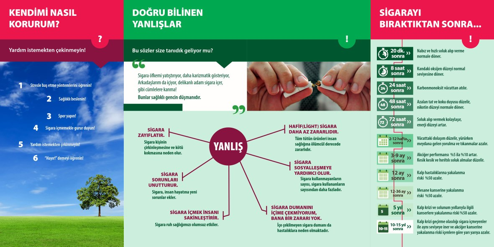
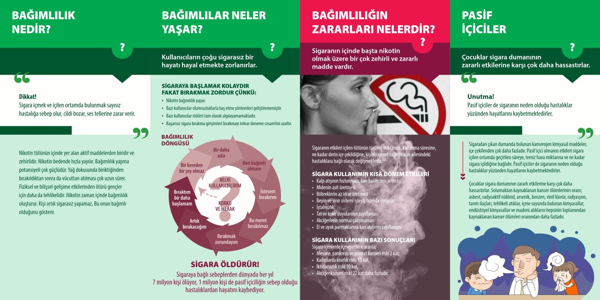

9 ŞUBAT DÜNYA SİGARA BIRAKMA GÜNÜ
Sigaranın zararları konusunda toplumsal farkındalık oluşturmak ve davranış değişikliğini sağlamak amacıyla Dünya Sağlık Örgütü tarafından 1987 yılında 9 Şubat “Dünya Sigarayı Bırakma Günü” olarak kabul edilmiştir.
Önemli bir halk sağlığı sorunu olan sigara kullanımı aynı zamanda birey ve ülke ekonomisini olumsuz yönde etkileyen bir bağımlıktır. Önlenebilir hastalık ve ölüm sebeplerinin en önde gelenlerinden nedenlerinden biridir.
Sigara bırakıldığı andan itibaren, oluşturduğu sağlık riskleri gerilemeye başlamakta ve vücutta olumlu değişiklikler yaşanmaya başlamaktadır.
Sigara bırakıldığı andan itibaren;
20. Dakikada: Kan basıncı ve kalp hızı normale döner.
8. Saatte: Kanda oksijen düzeyi normale döner.
24. Saatte: Akciğerler temizlenmeye başlar.
48. Saatte: Nikotin vücutta saptanamaz.
72. Saatte: Nefes almak kolaylaşır.
2-12. Haftada: Dolaşım düzelir.
3-9. Ayda: Nefes darlığı ve öksürük azalır.
5. Yılda: Kalp krizi riski yarıya iner.
10. Yılda: Kalp krizi riski sigara içmeyenlerle eşitlenir ve akciğer kanseri riski yarıya iner.
7 gün 24 saat esasına göre hizmet veren Alo 171 Sigara Bırakma Danışma Hattı ve konuya özel eğitimler alan hekimlerin görev yaptığı sigara bırakma poliklinikleri aracılığıyla, sigara bırakma konusunda hizmet sunulmaktadır.
Alo 171 Sigara Bırakma Danışma Hattı’nda, sigara bırakma sürecini kolaylaştıracak bilişsel-davranışsal tedavilere ilişkin destek sağlanırken, sigara bırakma polikliniklerinde uygun hastalara hekimler tarafından ilaç tedavisi de başlanmaktadır.
Sizleri Aralık 2020 tarihi itibari ile fabrikamız bünyesinde başlattığımız ve 2021 yılında da devam edecek olan ‘’OYAK RENAULT SİGARAYI BIRAKIYOR’’ kampanyasına katılmaya ve 9 Şubat Dünya Sigarayı Bırakma Gününde sigarayı bırakmaya davet ediyoruz.
Sigarasız bir dünya dileğimizle, dumansız yaşama destek olun.
Yaşadığınız havayı koruyun.
Dr. Yeşim BOZBEY SERT

